Пункт 2.
Активация взлома консоли.
Приставка как новая, на ней ничего нету, начинаем заниматься ее прокачкой.
2.1 Настройка DNS.
ЭТО ОБЯЗАТЕЛЬНО НАДО СДЕЛАТЬ, в противном случае обновления прошивки и игр будут прилетать каждый раз при включении интернета.
1. Включите PS4
2. Перейдите в настройки, выберите “Сеть”
3. Поставьте галочку напротив “Подключить к Интернету”
Рис. 4
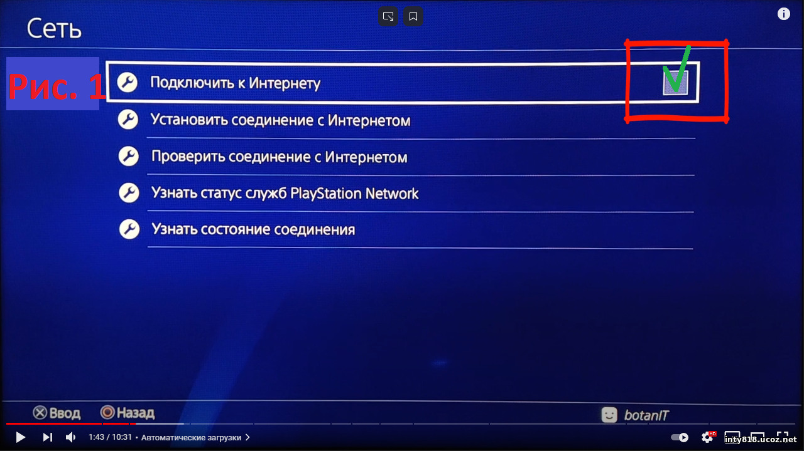
4. Перейдите в “Установить соединение с Интернетом”
5. Выберите “Использовать LAN либо WiFi”
6. В меню “Настройки IP-адреса” выберите “Автоматически”
7. В меню “Имя хоста DHCP” выберите “Не указывать”
8. В меню “Настройки DNS” выберите “Вручную”
9. В поле “Основной DNS” введите 62.210.38.117
10. В поле “Дополнительный DNS” ничего не пишите, будут 0.0.0.0
Рис. 5
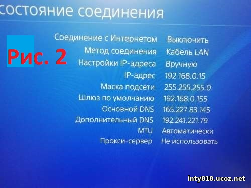
11. Нажмите “Далее”
12. В меню “Настройки MTU” выберите “Автоматически”
13. В меню “Прокси-сервер” выберите “Не использовать”
14. Нажмите “Проверить соединение с интернетом” для завершения настройки
15. По окончанию проверок нажмите кнопку PS на геймпаде, чтобы вернуться на начальный экран.
В дальнейшем все это настраивать не надо. Чтобы появился интернет на консоли нужно всего лишь зайти в настройки, выбрать “Сеть” и поставить галочку напротив “Подключить к Интернету”. При такой настройки сети ИНТЕРНЕТ на консоли БУДЕТ, а ОБНОВЛЕНИЯ прошивки и игр ЗАКАЧИВАТЬСЯ НЕ БУДУТ.
2.2 Блокировка обновлений через интернет (лучше сделать для полной уверенности).
1. Зайдите в “Настройки” PS4 и перейдите в “Система” -> “Автоматические загрузки”
Рис. 6
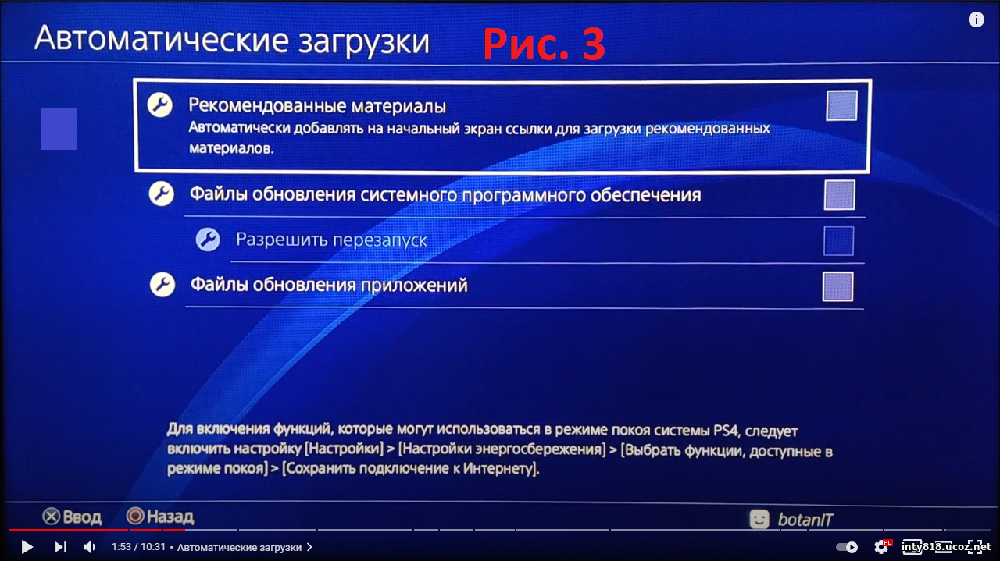
2. Снимите галочки с пунктов “Рекомендованные материалы”, “Файлы обновлений системного программного обеспечения” и “Файлы обновления приложений”
3. Вернитесь в меню “Настройки” и перейдите в “Настройки энергосбережения” -> “Выбрать функции, доступные в режиме покоя”.
Рис. 7
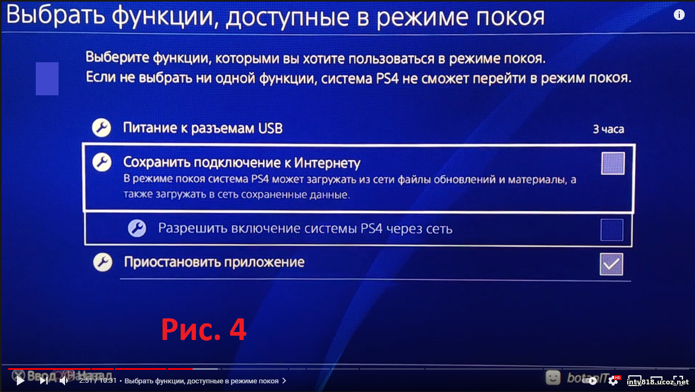
4. Снимите галочку с пункта “Сохранить подключение к Интернету” и оставьте галочки “Питание USB на 3 часа” (я геймпады заряжаю) и “Приостановить выполнение приложений” (это галочка нужна для корректной работы сна).
Видео по теме тут.
Возможные проблемы
Пока Вы все это делали, консоль могла слить с сети файл последнего обновления. Не надо пугаться, ничего страшного не произошло. Заходим в “Уведомления”, находим надпись “Файл обновление готов к установке”, нажимаем “Options” на геймпаде, выбираем “Удалить”, ставим галочку напротив файла обновления и выбираем “Удалить”.
Рис. 8, 9
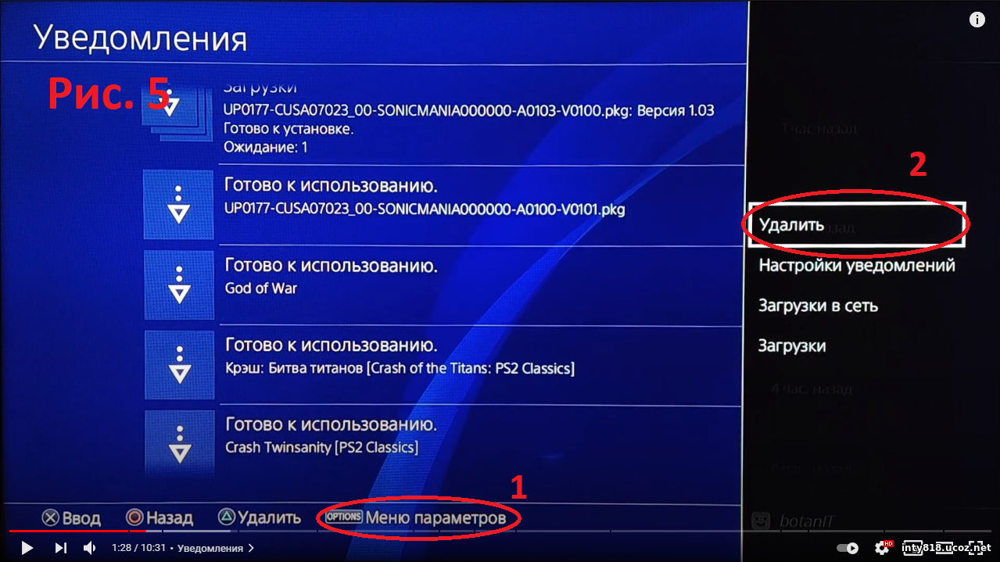
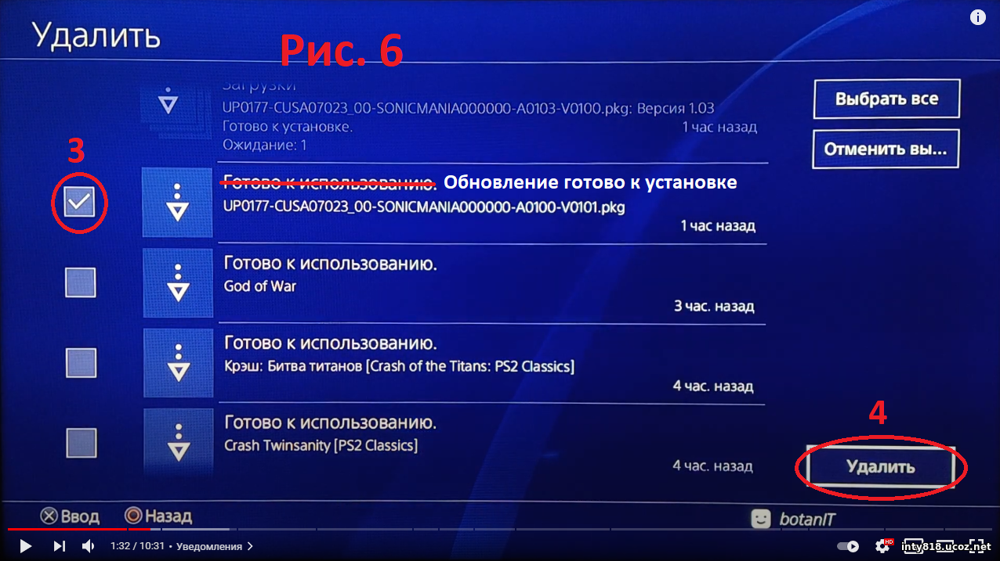
Существует два способа активации консоли и запуска GoldHen на ПО 9.00:
Вариант 1. При помощи флешки
2.2.1 Подготовка флешки-ключа для активации консоли. КАСАЕТСЯ ТОЛЬКО ПО 9.0!!!
1. Скачиваем архив для создания флешки.
2. Устанавливаем на компьютер программу win32diskimager из архива.
3. Берем флешку, подойдет абсолютно любая. Вставляем в компьютер.
4. Запускаем программу win32diskimager. Вставляем в «поле 1» файл exfathax.img из архива. В «поле 2» нужно выбрать вашу флешку, букву диска, которой она у вас обозначена. После чего можно нажимать Write.
Подготовка флешки
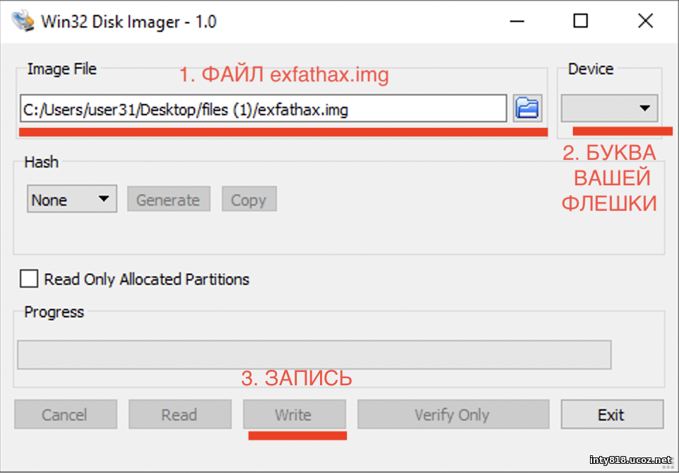
5. После того как флешка готова, можно приступать к активации HEN на Playstation 4.
Эта флешка-ключ для активации хена, ОНА БУДЕТ НУЖНА ПОСТОЯННО при включении консоли и активации взлома!!!
Инструкция взята тут.
Возможные проблемы
Флешка не форматируется win32diskimager: попробовать отформатировать низкоуровневым форматированием либо заменить флешку, либо использовать другой ПК (такое тоже было).
Вариант 2. При помощи платы ESP8266 или ESP32 S2 Mini либо Key
Для активации консоли подходят 3 вида плат: ESP8266, ESP32 S2 Mini и ESP32 S2 Key.
ESP8266
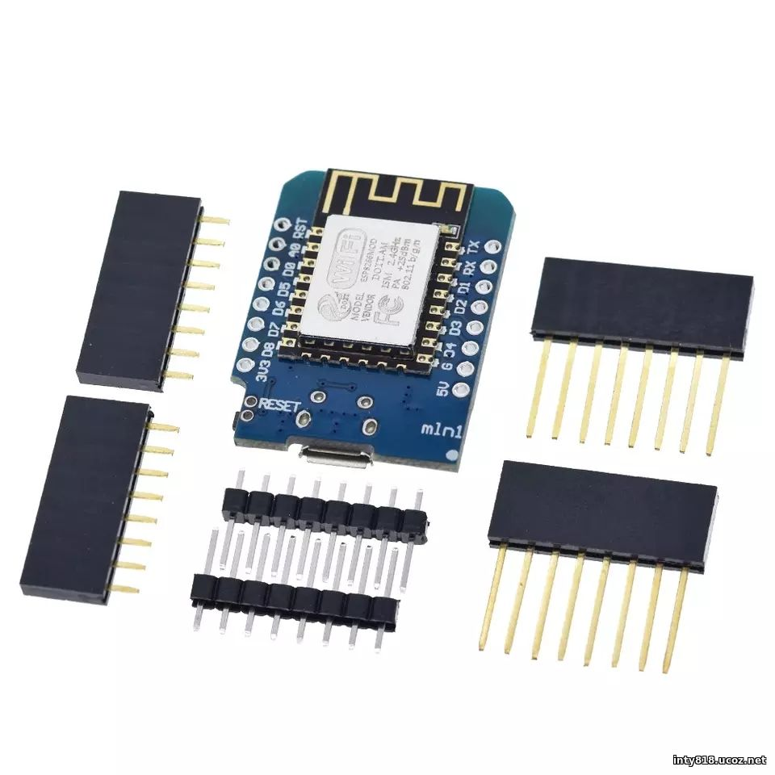
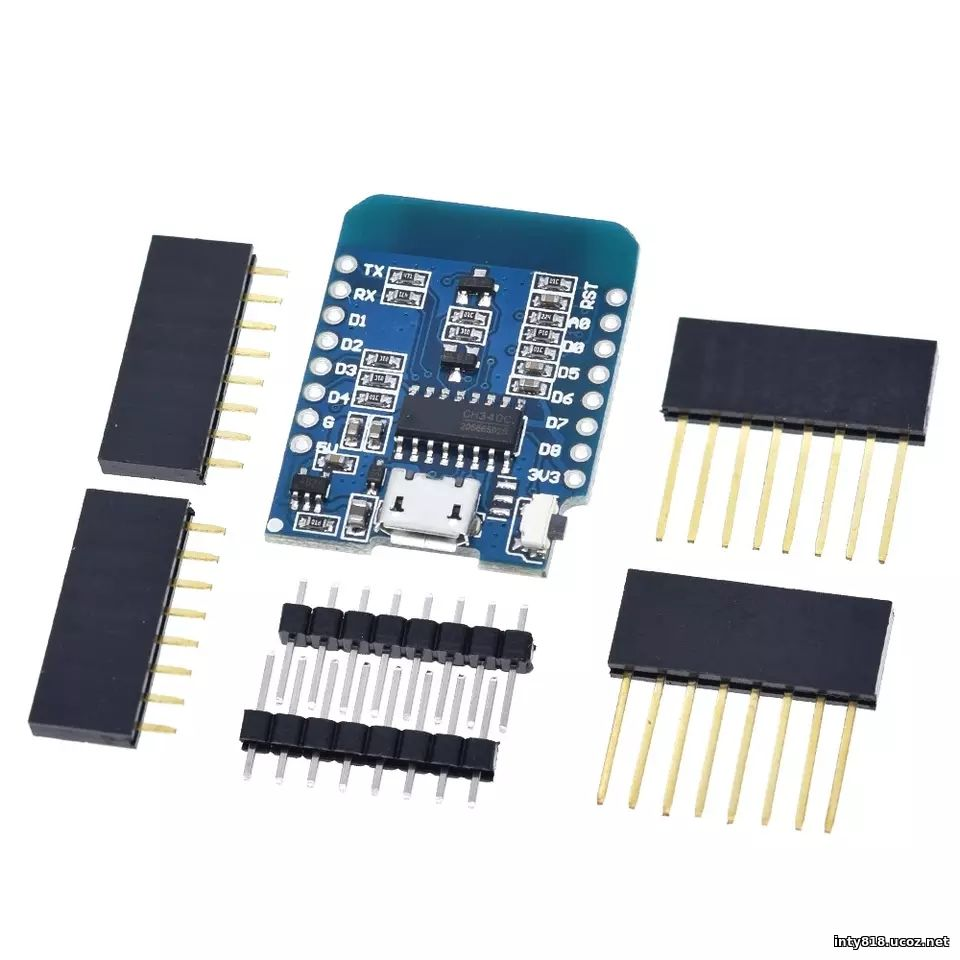
ESP32 S2 Mini
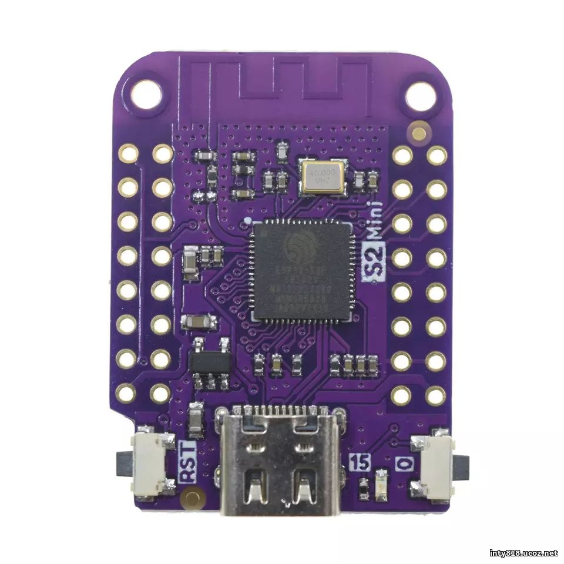
ESP32 S2 Key
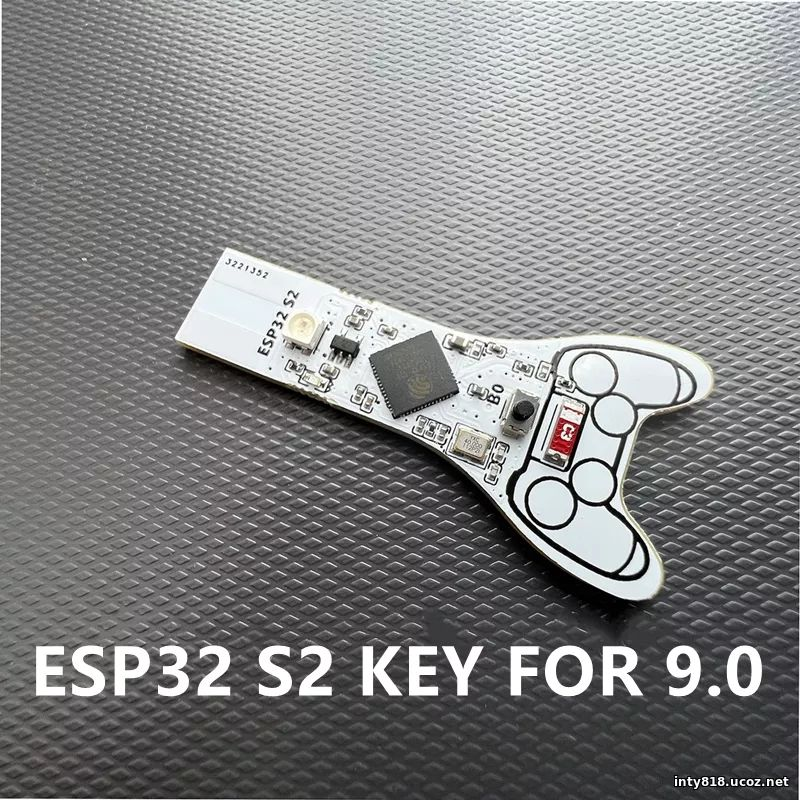
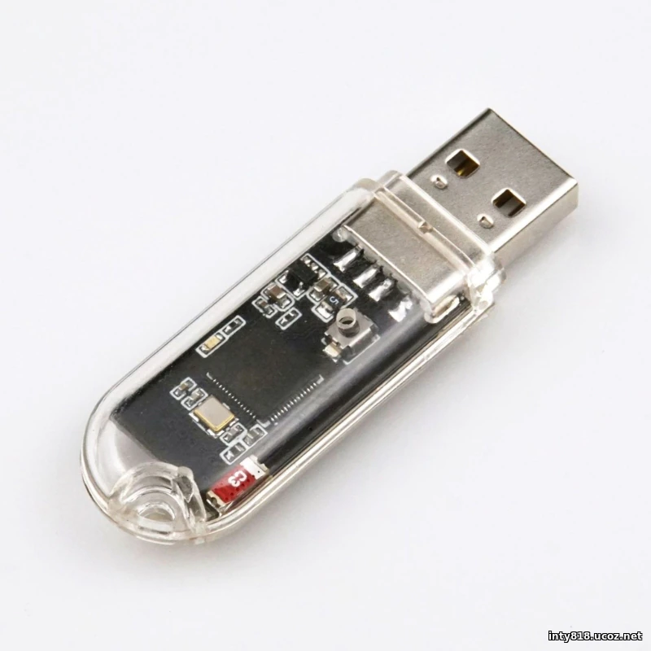
Купить можно тут ESP8266, тут ESP32 S2 Mini, тут ESP32 S2 Key, и тут разновидность ESP32 S2 Key .
Дешевле ESP32 S2 Mini брать не стоит, очень много брака. Может работать, а может и нет. Кабель для нее тоже использовать только качественный. Дешевые кабеля не подходят. Плата может прошиться, на консоли хост заведется, а вот флешка вряд ли с эмулируется.
Платы ESP8266 и ESP32 S2 нужны для активации консоли без использования флешки (почти, на плате ESP8266 флешка надо, просто ее не надо доставать. Она напрямую подключается к плате и включается в определённый момент времени). Они раздают на консоль хост с активацией и, в определенный момент времени, эмулируют подключение флешки для активации PS4 и запуска GoldHen на ней.
Отличия плат:
ESP8266 сама не может эмулировать флешку, из-за этого к этой плате физически подключается флешка. Требуется прямые руки, паяльник и прибамбасы, об этом ниже.
ESP32 S2 Mini сама эмулирует флешку по требованию хоста в определенный момент времени. Кроме кабеля для платы, ей больше ничего не надо.
ESP32 S2 Key вообще ничего не надо. Она выполнена в виде флешки и просто вставляется в USB гнездо консоли.
Плата ESP8266, ESP32 S2 Mini либо ESP32 S2 Key ДОЛЖНА ВСЕГДА БЫТЬ ПОДКЛЮЧЕНА К КОНСОЛИ В ПОРТ USB!!!
Подготовка плат к прошивке.
Для ESP8266 требуется: паяльник, паяльные принадлежности, USB-удлинитель (который в процессе будет разрезан), транзистор BC548 и два резистора, номиналом 1,1кОм и 1кОм, прошитая, образом pico_img, флешка. Транзистор можно купить тут, а тут резисторы. Либо искать все это дело по радио ларькам. Транзистор можно купить и аналоговый, но могут быть косяки в работе. Собираем плату согласно схеме. На реле схему не привожу по причине дороговизны этого самого реле. Качество пайки и правильность сборки схемы Вы сможете проверить только после прошивки платы, подключении её к консоли и активации GoldHEN.
Схема сборки ESP8266
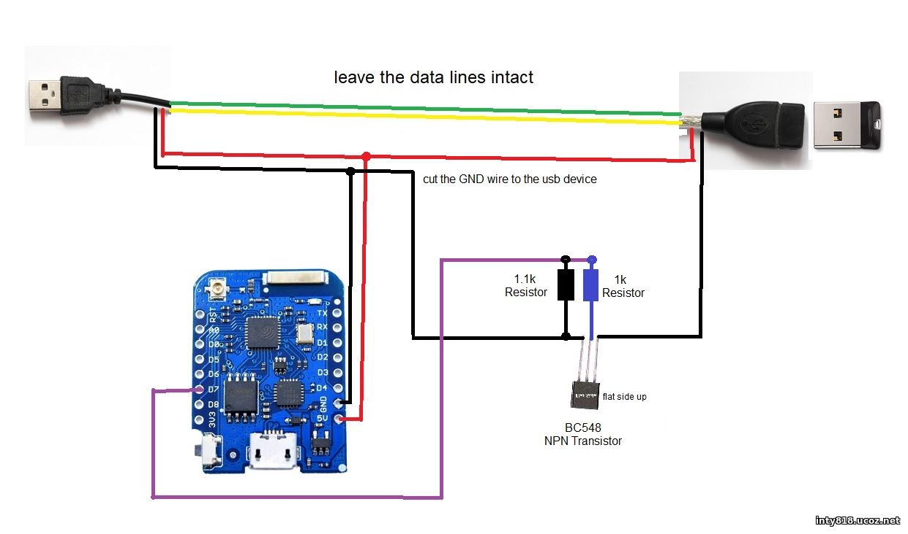
Для ESP32 S2 Mini требуется: кабель Type C.
Для ESP32 S2 Key требуется: ничего.
Прошиваем платы ESP8266 и ESP32 S2 Mini, Key.
Принцип прошивки всех плат одинаковый. Есть два варианта заливки прошивки на плату: онлайн и офлайн. Все делается на ПК.
Вариант 1. Офлайн.
Важное замечание. Требуется ПК на ОС Windows 10/11 x64!!!!
1. Зажимаем кнопку "Boot" и подключаем кабель в порт с надписью USB.
2. Устанавливаем драйвер zadig-2.7.exe, с выбором как на скрине (на ESP8266 драйвера могут встать автоматом на win10/11).
Zadig
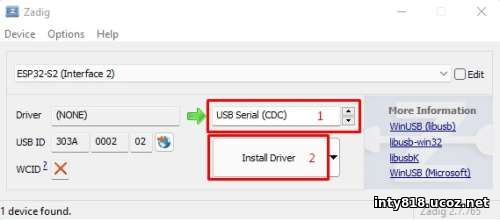
3. В диспетчере должно появится два устройства - Com port с номером и неизвестное устройство ESP32-S2 или ESP8266.
Диспетчер задач
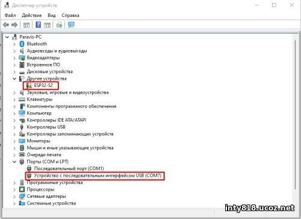
4. Открываем программу NodeMCU-PyFlasher.exe. Выбираем COM порт нашей платы, выбираем прошивку и выбираем остальные значения как на скрине.
NodeMCU
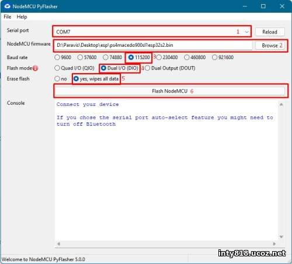
5. Нажимаем Flash NodeMCU и ждем.
6. Процесс закончится с надписью как на скрине.
Завершение процесса
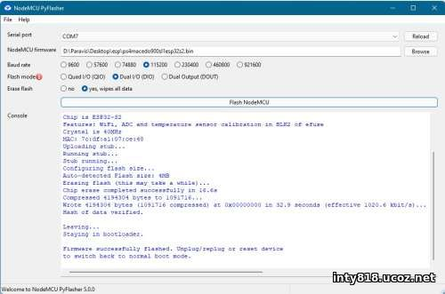
7. Теперь переподключаем нашу плату.
8. Далее, если вам нужно просто подключить консоль к ESP, без доступа к домашней сети, то просто подключаете USB кабелем ESP к консоли и коннектитесь с PS4 к WiFi "PS4MECADO900" пароль 12345678 (для esp32 s2) и macedo900 (для esp8266).
Создаете простое подключение, везде далее. Вбили логин и пароль от WiFi платы.
Можно пользоваться.
Если же надо подключить плату к домашней сети, читаем далее.
9. Подключаетесь к сети, которую написал выше с телефона/ПК/ноута.
10. Заходите по адресу http://11.11.11.11/admin.html (здесь указан ip адрес платы на хосте от Macedo, у Каро будет свой, у Хамелеона свой, у Night King свой. Читайте описание к прошивкам там, где их берёте).
11. Заходите в пункт "Config Editor"
12. Снимаете галочку с пункта "START AP"
13. Ниже заполняете пункт "WIFI SSID" (это имя вашей wifi сети. ВНИМАТЕЛЬНО ПРОВЕРЯЙТЕ ДАННЫЕ!!!)
14. Заполняете пункт "WIFI PASSWORD" (это пароль вашей wifi сети. ВНИМАТЕЛЬНО ПРОВЕРЯЙТЕ ДАННЫЕ!!!)
15. Ставите галку на пункте "CONNECT WIFI"
16. Нажимаете "Save Config"
17. Плата перезагрузится и если все ввели и сделали правильно, то плата подключится к вашей домашней сети.
Конфигуратор платы

Вот тут-то, на пункте 17, и скрывается нюанс. После того, как Вы подключили плату к своему модему/роутеру, она получила ip адрес по DHCP и вы его не знаете. И, соответственное, вы не сможете попасть на плату с консоли.
Настраиваем модем/роутер и плату на постоянный ip адрес. Делаю на примере своего модема.
1. Вы должны знать ip адрес своего модема/роутера. Как это сделать, ищите в интернете.
2. Заходим на модем/роутер с браузера ПК.
3. Находим Status – DHCP. Нас интересует наша плата. Она будет иметь имя PS4.Local. Надо ей присвоить постоянный ip адрес по ее mac адресу. Скопируйте mac адрес платы в блокнот.
MAC-адрес платы
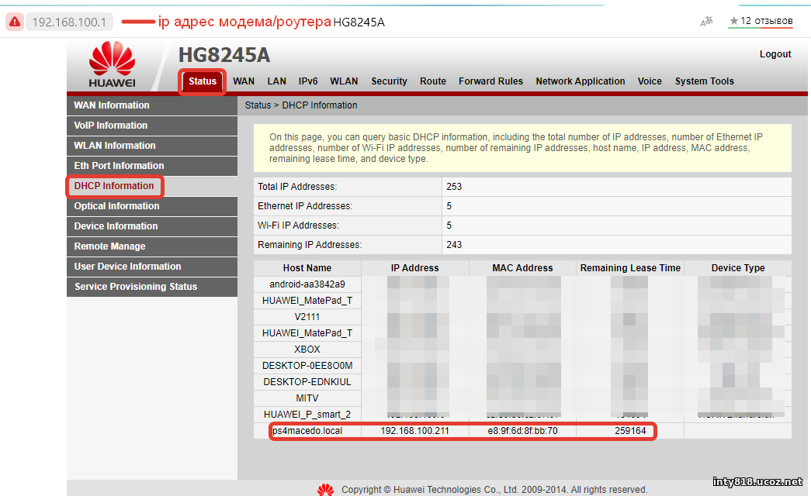
4. Переходим во вкладку Lan – DHCP Static, нажимаем New, в строке mac адрес – пишем mac платы. В строке ip адрес – ip адрес платы, он должен быть в вашей подсети и отличаться последними цифрами. В моем примере .211. Моя подсеть 192.168.0. После того как прописали, нажимаем Apply.
MAC-адрес = IP-адрес
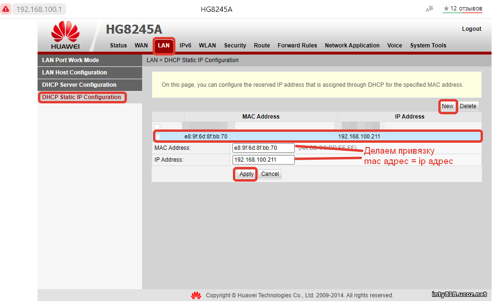
5. Проверяем работоспособность. На ПК в браузере в строке адреса пишем http://ip адрес платы, который Вы присвоили, в моем случае http://192.168.100.211 и жмем ввод. Должен открыться хост. После этого данный адрес можно вбивать в закладки на консоли и переходить на него. Сразу пойдет активация.
5.1 Если надо чтобы хост запускался через руководство пользователя, на консоли в настройках сети пропишите основным шлюзом и основным днс ip адрес Вашей платы. Должно прокатить.
Хост
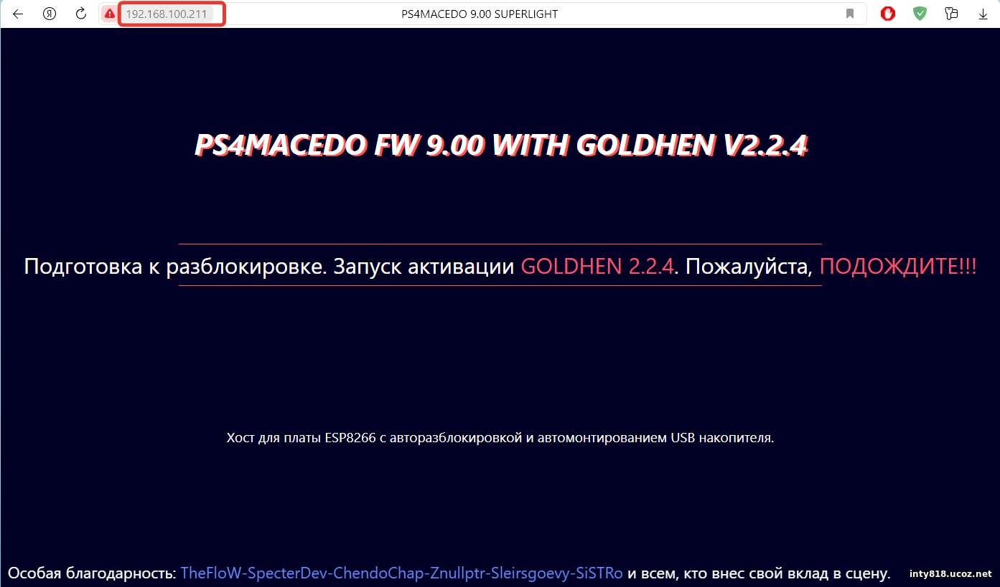
Если требуется попасть а админку платы, то:
6. Открываем браузер и в строке адреса пишем: http://ip адрес платы, который Вы присвоили/admin.html, в моем случае http://192.168.100.211/admin.html.
Важное замечание. В некоторых прошивка в админку можно попасть, если написать /admin.html, а /config.html. Админка есть не на всех хостах!!!
Админка
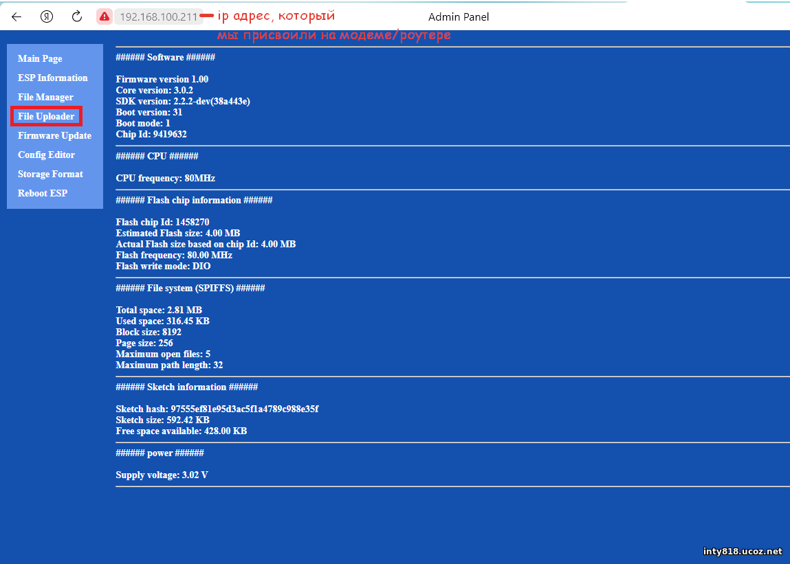
7. Если надо обновить хост или GoldHen, то заходим справа в File Uploader, жмем Select, выбираем сначала один файл, жмем Upload. Вас перекинет в File Manager. Для заливки второго файла повторяем действия.
Админка
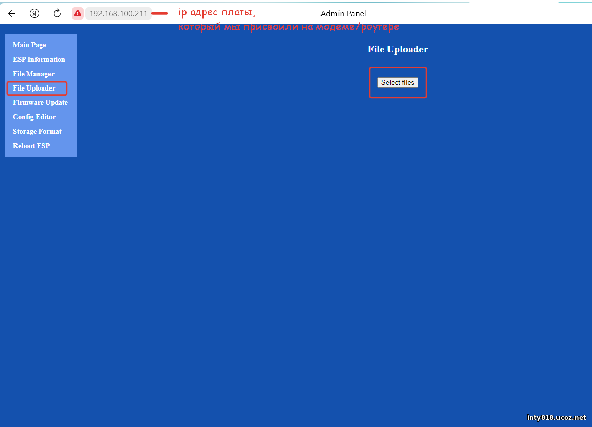
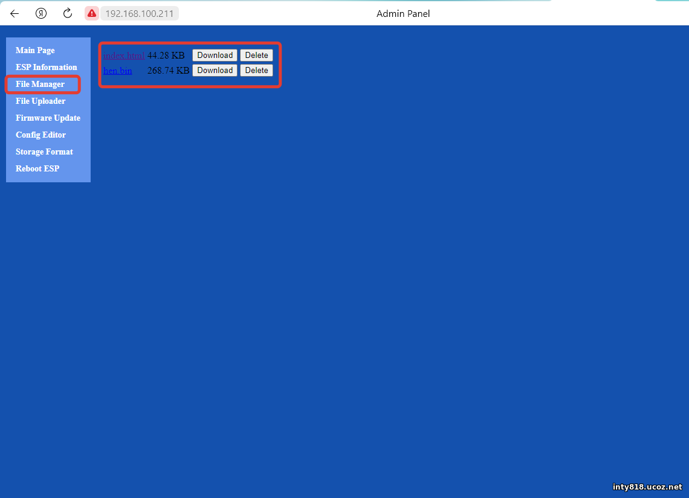
Готово!
Прошивки можно найти тут для ESP 32 S2, зекрало для ESP 32 S2, тут для ESP8266, зекрало для ESP8266
Вариант 2. Онлайн.
Важное замечание. Работает на любой OC Windows, MacOS!
1. Качаем драйвер для соответствующей платы. Для платы ESP32 S2 mini устанавливаем драйвер zadig-2.7.exe, с выбором как на скрине. Для платы ESP8266 качаем и устанавливаем драйвер CH340_WIN либо CH34X_MAC.
Zadig
2. Зажимаем кнопку Boot на плате и подключаем ее к ПК.
3. Открываем браузер на ПК и переходим по ссылке для своей платы.
Для платы ESP8266 переходим по этой ссылке: ESP8266.
Для платы ESP832 S2 mini/key переходим по этой ссылке: ESP32 S2.
На данных хостах собраны все актуальные прошивки на сегодняшний день.
Хосты
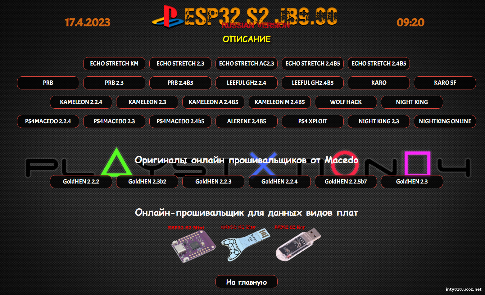
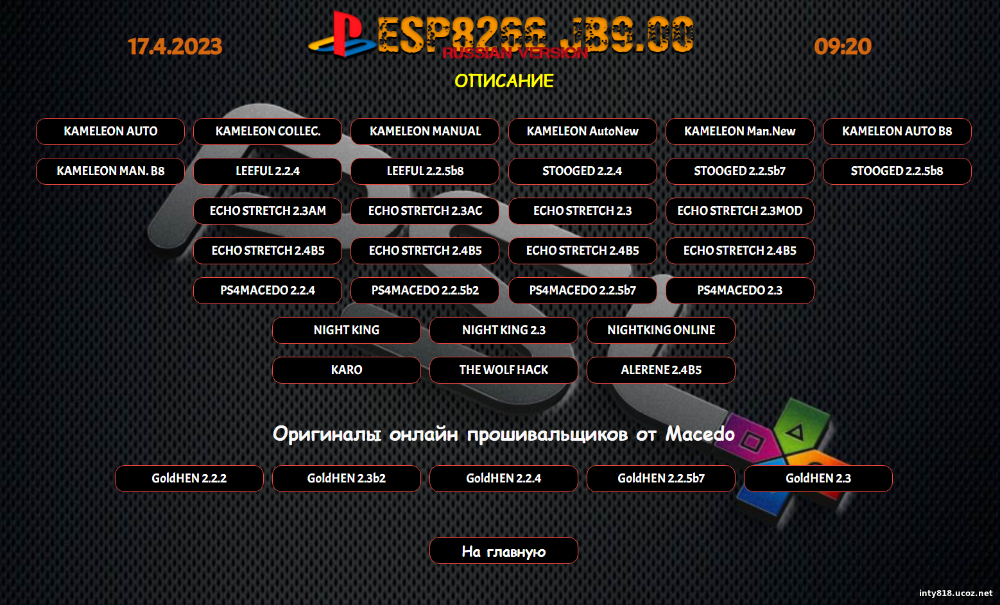
4. Переходите на нужный хост с прошивкой, нажимаете СТАРТ и следуете указаниям в окошке.
Если хост выдаст ошибку, значит не установлены драйвера. Их можно скачать ниже либо же, если нажать отмена в окне подключения, то вылезет окно с ссылками на драйвера в интернете.
Готово!
Процесс прошивки платы
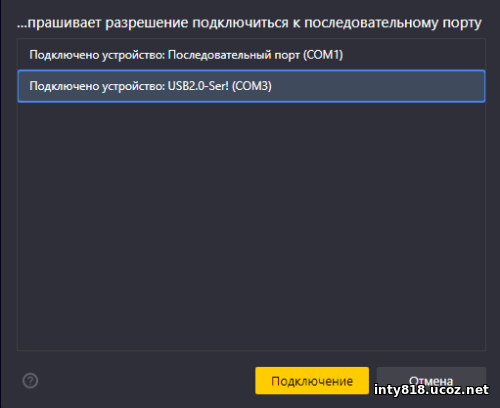
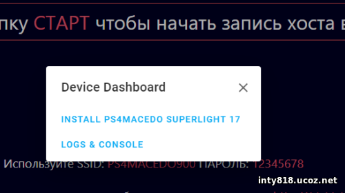
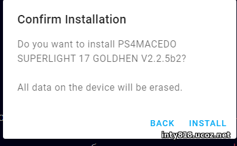
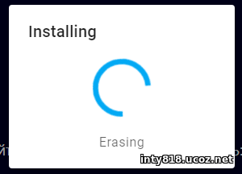
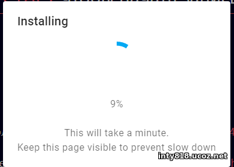
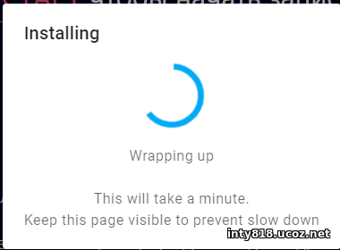
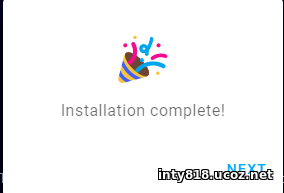
Сообщение об ошибке
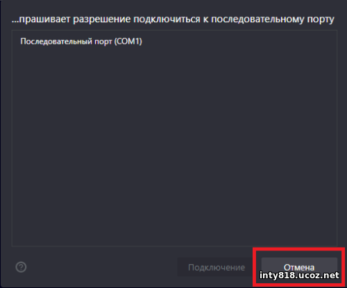
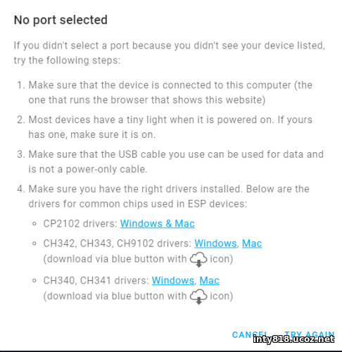
5. Далее, если вам нужно просто подключить консоль к ESP, без доступа к домашней сети, то просто подключаете USB кабелем ESP к консоли и коннектитесь с PS4 к WiFi "PS4MECADO900" пароль 12345678 (для esp32 s2) и macedo900 (для esp8266).
Создаете простое подключение, везде далее. Вбили логин и пароль от WiFi платы. Логин и пароль указан для примера от хоста Маседо.
Если же надо подключить плату к домашней сети, читаем далее.
6. Если вам нужно приконнектить модуль ESP к вашей сети, то подключаетесь к сети, которую написал выше с телефона/ПК/ноута/PS4.
7. Заходите по адресу http://11.11.11.11/admin.html (здесь указан ip адрес платы на хосте от Macedo, у Каро будет свой, у Хамелеона свой, у Night King свой. Читайте описание на странице прошивки).
8. Заходите в пункт "Config Editor"
9. Снимаете галочку с пункта "START AP"
10. Ниже заполняете пункт "WIFI SSID" (это имя вашей wifi сети. ВНИМАТЕЛЬНО ПРОВЕРЯЙТЕ ДАННЫЕ!!!)
11. Заполняете пункт "WIFI PASSWORD" (это пароль вашей wifi сети. ВНИМАТЕЛЬНО ПРОВЕРЯЙТЕ ДАННЫЕ!!!)
12. Ставите галку на пункте "CONNECT WIFI"
13. Нажимаете "Save Config"
14. Плата перезагрузится и если все ввели и сделали правильно, то плата подключится к вашей домашней сети.
Админ панель
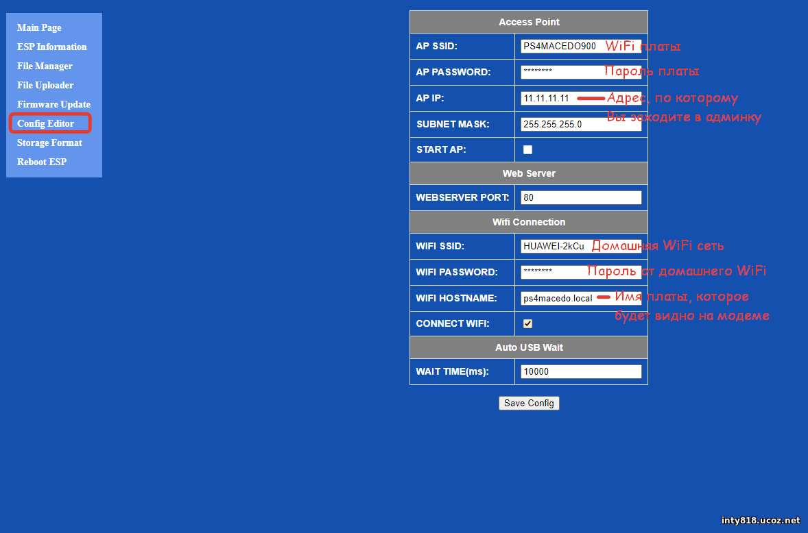
Вот тут-то, на пункте 14, и скрывается нюанс. После того, как Вы подключили плату к своему модему/роутеру, она получила ip адрес по DHCP и вы его не знаете. И, соответственное, вы не сможете попасть на плату с консоли.
Настраиваем модем/роутер и плату на постоянный ip адрес. Делаю на примере своего модема.
15. Вы должны знать ip адрес своего модема/роутера. Как это сделать, ищите в интернете.
16. Заходим на модем/роутер с браузера ПК.
17. Находим Status – DHCP. Нас интересует наша плата. Она будет иметь имя PS4.Local. Надо ей присвоить постоянный ip адрес по ее mac адресу. Скопируйте mac адрес платы в блокнот.
DHCP
18. Переходим во вкладку Lan – DHCP Static, нажимаем New, в строке mac адрес – пишем mac платы. В строке ip адрес – ip адрес платы, он должен быть в вашей подсети и отличаться последними цифрами. В моем примере .211. Моя подсеть 192.168.0. После того как прописали, нажимаем Apply.
IP=MAC
19. Проверяем работоспособность. На ПК в браузере в строке адреса пишем http://ip адрес платы, который Вы присвоили, в моем случае http://192.168.100.211, и жмем ввод. Должен открыться хост. После этого данный адрес можно вбивать в закладки на консоли и переходить на него. Сразу пойдет активация.
19.1. Если надо чтобы хост запускался через руководство пользователя, на консоли в настройках сети пропишите основным шлюзом и основным днс ip адрес Вашей платы. Должно прокатить.
Активация GoldHEN
Если требуется попасть а админку платы, то:
20. Открываем браузер и в строке адреса пишем: http://ip адрес платы, который Вы присвоили/admin.html, в моем случае http://192.168.100.211/admin.html
Админ панель
21. Если надо обновить хост или GoldHen, то сначала заходим справа в File Manager, жмем кнопку Dowload на каждом файле и сохраняем эти 2 файла к себе на ПК или телефон, это будет Ваш бэкап. Затем заходим справа в File Uploader, жмем Select, выбираем сначала один файл, жмем Upload. Вас перекинет в File Manager. Для заливки второго файла повторяем действия. Админка есть не на всех хостах!!!
Обновление GoldHEN
Готово.
2.3 Активируем взлом (ПО 5.05 - 9.00).
1. Подключаем интернет.
2. Открываем браузер.
3. Заходим в «Настройки», выбираем «Очистить куки» и «Очистить данные веб-сайтов». Больше ничего в настройках не надо трогать, галочки верхние две не убирать!
Рис. 8
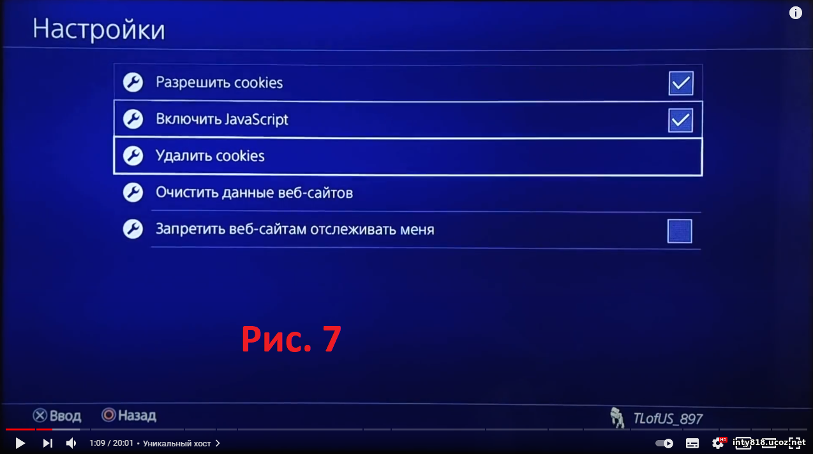
Хосты для активации GoldHen на консоли собраны на этой странице: https://snejka1915.github.io/index.html
Это ПРОСТО сборник хостов, эта страница не кэшируется!!! Нажимаем на любую кнопку на этой странице и переходим на соответствующий хост.
Для ПО 9.00
Если используете плату ESP8266 либо ESP32, то подключаемся к плате по WiFi либо, тогда заходим в руководство пользователя. Если же она в домашней сети, заходим на её ip адрес.
Эту страницу либо ip адрес платы можно добавить в закладки и с неё уже переходить на хосты (Нажмите кнопку OPTIONS на геймпаде, выберите пункт “Добавить закладку”, чтобы не вводить каждый раз адрес вручную после перезагрузки приставки).
4. После того как зашли на хост в браузере консоли, запустится автоматическое кэширование данных. По завершению этой процедуры, в браузере сверху появиться надпись «Выключите интернет и перезапустите браузер». Нажали кнопку PS, зашли в "Настройки" - "Сеть" - "Подключение к интернету" убрали галочку.
Рис. 9, 10
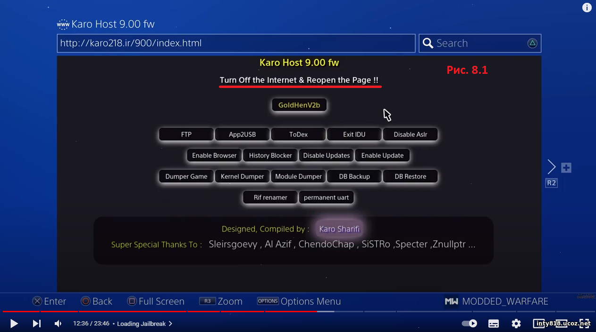
5. Выключили интернет, зашли снова в браузер и нажимаете кнопку активации GoldHen.
Пункты 6 и 7 для консолей на ПО 9.00
6. Нажимаем на кнопку с надписью "GoldHEN", ждем пока появится сообщение "Insert Usb" в этот момент вставляем подготовленную флешку в USB разьем.
Рис. 11, 12
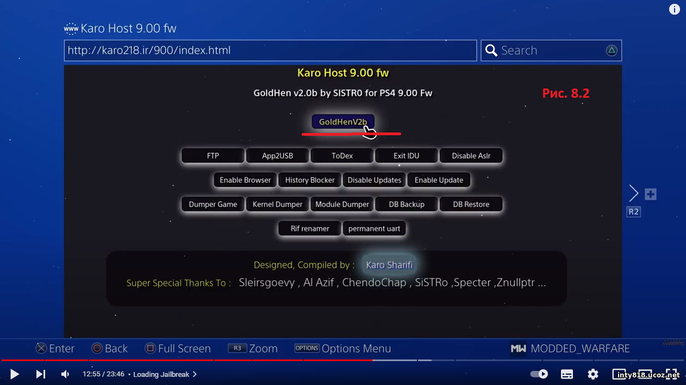
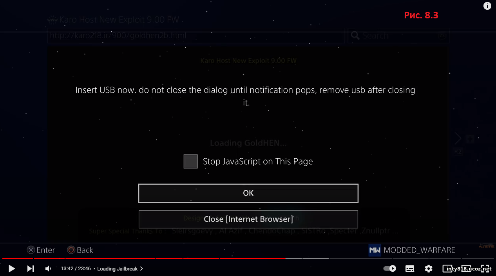
7. В левом углу всплывет сообщение о том, что флешка не поддерживается. Ждем пока это сообщение пропадет, после этого нажимаем "Ок" и уже после этого вытаскиваем флешку, GoldHEN запуститься автоматически.
Рис. 13, 14
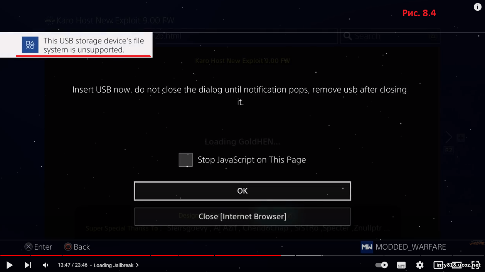
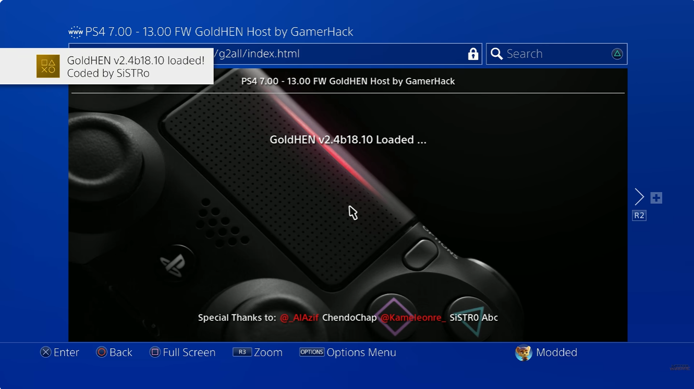
Видео пример активации тут, тут и тут.
Инструкция взята тут, тут и тут.
Возможные проблемы.
Если не проходит активация, то форматируем флешку низкоуровневым форматированием либо же меняем флешку на другую.